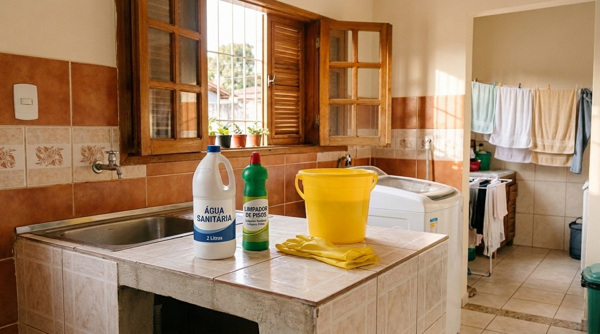

LIMPEZA OU PERIGO? OS RISCOS INVISÍVEIS DAS MISTURAS CASEIRAS

Na cidade de Imperatriz, no Maranhão, dona Francisca, de 45 anos, trabalhava como diarista há mais de quinze anos. Conhecida pela dedicação e pelo cuidado com a limpeza, ela costumava utilizar diferentes produtos químicos para remover manchas, gorduras e sujeiras difíceis. Com o aumento do preço dos produtos de limpeza, começou a procurar alternativas mais econômicas na internet, encontrando vídeos que ensinavam a preparar misturas caseiras consideradas mais potentes e eficientes.
Certo dia, dona Francisca recebeu uma proposta para realizar uma limpeza pesada em uma residência. A proprietária, dona Helena, exigiu que os banheiros fossem completamente higienizados, principalmente porque apresentavam manchas persistentes nos pisos e vasos sanitários.
"— Francisca, preciso que você retire todas essas manchas. Já tentei vários produtos e nenhum resolveu."
"— Pode deixar, dona Helena. Vi uma receita na internet que promete remover até as sujeiras mais difíceis. Vou experimentar hoje."
Durante a limpeza, Francisca utilizou água sanitária e, em seguida, acrescentou um limpador de cerâmica (produto ácido para pisos) para tentar potencializar a remoção das manchas. Ela acreditava que a combinação dos dois produtos aumentaria a eficiência da limpeza, sem imaginar que poderia ser perigoso.
Poucos instantes depois, percebeu um odor muito forte e irritante. Começou a sentir ardência nos olhos, tosse intensa e muita dificuldade para respirar. Assustada, abandonou o banheiro correndo e procurou ajuda.
Sua filha Mariana, estudante do 3º ano do Ensino Médio, estava na residência e percebeu o que havia acontecido.
"— Mãe, o que a senhora colocou nesse banheiro? Está saindo um cheiro muito forte!"
"— Misturei água sanitária com um produto para tirar manchas. Vi várias pessoas fazendo isso na internet. Achei que não teria problema."
Mariana lembrou das aulas de Química, nas quais havia aprendido que algumas substâncias, quando misturadas, podem sofrer reações químicas e formar produtos perigosos. Ela sabia que a água sanitária, ao entrar em contato com determinados produtos ácidos, pode liberar gás cloro (Cl₂), uma substância tóxica que queima e afeta gravemente o sistema respiratório.
Preocupada, Mariana afastou todas as pessoas do ambiente e procurou ajuda para que sua mãe recebesse atendimento médico. Após o ocorrido, decidiu conversar com seu professor de Química na escola.
"— Professor, por que misturar produtos de limpeza pode ser tão perigoso, se eles são utilizados diariamente em nossas casas?"
O professor explicou que os produtos possuem diferentes composições químicas e que algumas combinações podem desencadear reações perigosas. Ressaltou também que a eficiência da limpeza não depende de misturar um monte de coisas, mas de usar o produto certo da maneira correta.
"— Mas professor, se um produto é ácido e o outro é básico, não deveria ocorrer apenas uma reação de neutralização e virar água com sal?"
O professor esclareceu que os produtos comerciais contêm substâncias fortes e oxidantes. Nem toda reação entre eles resulta apenas em água inofensiva; muitas produzem gases tóxicos que sufocam.
Ao voltar para casa, Mariana tentou convencer sua mãe a abandonar de vez as misturas caseiras. Entretanto, Francisca demonstrou aflição:
"— Minha filha, eu entendo o perigo, mas os produtos estão caros e meus clientes exigem uma limpeza rápida e eficiente. Como vou trabalhar sem gastar tanto?"
A situação ficou ainda mais séria quando Mariana descobriu que outras diaristas da comunidade também utilizavam misturas caseiras divulgadas nas redes sociais, achando que eram seguras. Diante desse problema, Mariana percebeu que precisava encontrar uma solução que considerasse tanto a segurança quanto o bolso das trabalhadoras.
🤔 E agora? Se você estivesse no lugar de Mariana:
Que solução você proporia para ajudar sua mãe e as diaristas a realizar uma limpeza eficiente, econômica e segura? Como os conhecimentos de Química podem ajudar nessa decisão?